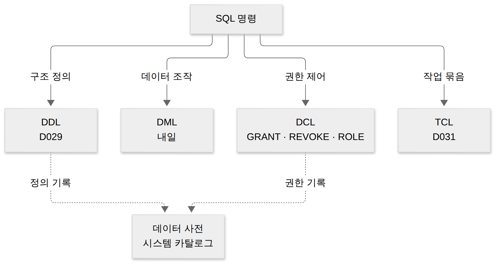
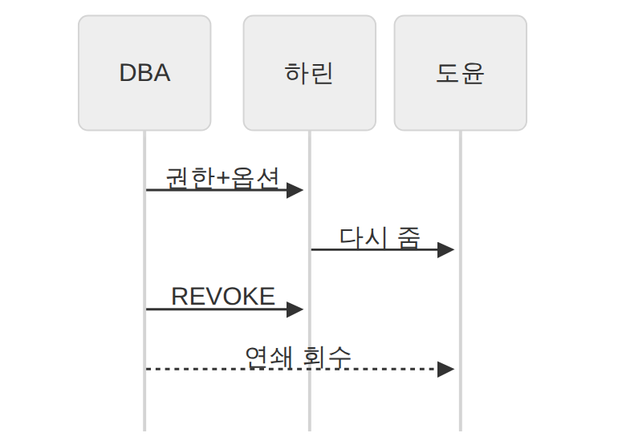
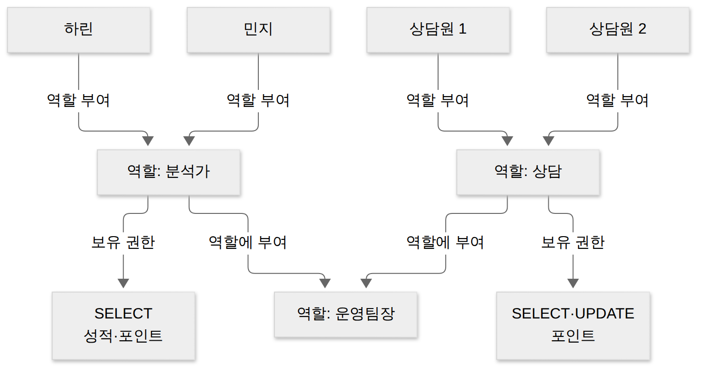
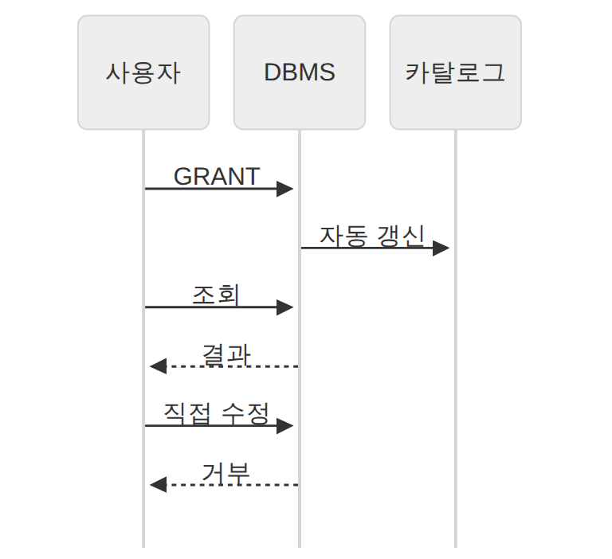
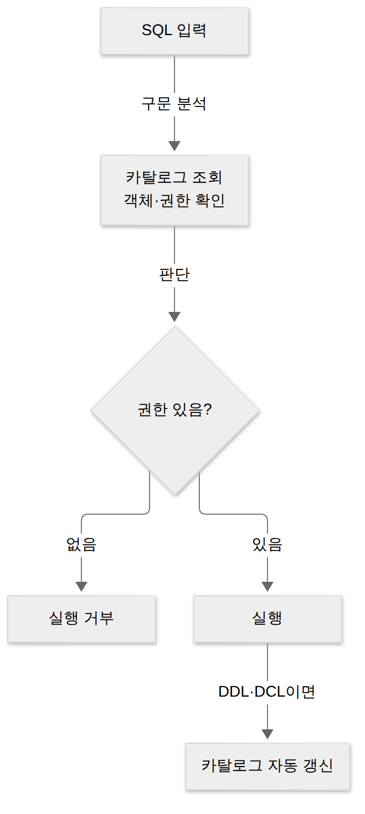
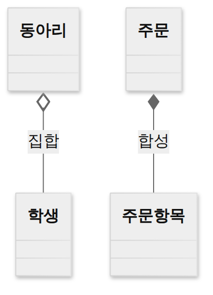

D032 · DCL과 데이터 사전: GRANT·REVOKE·WITH GRANT OPTION·CASCADE·ROLE·시스템 카탈로그
B1 B2 어제 D031에서 여러 SQL을 한 묶음으로 확정하거나 되돌리는 법(TCL)을 봤어요. 오늘은 질문이 바뀌어요. “누가 이 테이블을 만질 수 있나, 그리고 그 사실은 어디에 적혀 있나.” 앞 질문의 답이 DCL, 뒤 질문의 답이 데이터 사전이에요. 예시는 어제의 ‘공부친구’ 앱 운영 DB에서 DBA가 분석 담당 하린, 인턴 도윤, 고객센터 팀에 권한을 나눠 주는 장면 하나로 끝까지 가요.
- GRANT·REVOKE 문법과 WITH GRANT OPTION·CASCADE의 효과(권한 연쇄 회수)를 설명할 수 있다
- 역할(ROLE)로 권한을 묶어 주는 순서를 설명할 수 있다
- DCL과 TCL의 분류 차이(COMMIT·ROLLBACK의 자리)를 구별할 수 있다
- 데이터 사전(시스템 카탈로그)의 내용·특징과 메타데이터를 설명할 수 있다
1. 큰 그림 — 모두가 관리자면 아무도 책임지지 않는다
공부친구 DB 하나를 앱 서버, 분석 담당, 인턴, 고객센터가 함께 써요. 가장 쉬운 방법은 모두에게 관리자 계정을 나눠 주는 거예요. 그런데 이건 금고 비밀번호를 사내 게시판에 붙여 두는 것과 같아요. 편하긴 한데, 누가 열었는지 아무도 몰라요. 인턴의 실수 한 번으로 성적 테이블이 통째로 지워져도 막을 장치가 없죠.
그래서 SQL에는 권한을 다루는 갈래가 따로 있어요. DCL(Data Control Language, 데이터 제어어)은 데이터베이스 사용자에게 권한을 부여하거나 회수해 보안을 지키는 언어예요. 핵심 명령은 권한을 주는 GRANT와 거두는 REVOKE 두 개예요. D029에서 본 네 갈래(DDL·DML·DCL·TCL) 중 세 번째 칸을 오늘 채우는 셈이에요.
권한을 나눠 주면 DBMS는 그 사실을 어딘가에 적어 둬야 해요. 그래야 다음 SQL이 들어왔을 때 “이 사람이 이 테이블을 읽어도 되나”를 확인할 수 있죠. 그 장부가 데이터 사전(Data Dictionary)이에요. 테이블을 만들면(DDL) 테이블 정의가, 권한을 주면(DCL) 권한 내역이 이 장부에 자동으로 적혀요. 오늘 두 주제가 만나는 지점이 바로 여기예요.

오늘 나오는 용어를 먼저 한 표로 모아 둘게요. 각 용어는 아래 장면에서 다시 자세히 풀어요.
| 용어 | 뜻 | 공부친구 예 |
|---|---|---|
| 권한(Privilege) | 특정 객체에 특정 작업을 할 수 있는 자격 | 하린이 성적 테이블을 SELECT할 자격 |
| 객체(Object) | 권한이 걸리는 대상: 테이블·뷰 등 | 성적, 포인트 테이블 |
| DBA | DB 전체를 관리하는 관리자, 처음 권한을 나눠 주는 사람 | 운영 DB 관리자 |
| 역할(Role) | 여러 권한을 묶어 이름 붙인 꾸러미 | ‘분석가’ 역할 |
| 메타데이터 | 데이터에 대한 데이터(구조·정의·권한) | “점수 컬럼은 INT”라는 정보 |
| 데이터 사전 | 메타데이터를 모아 둔 시스템 테이블 = 시스템 카탈로그 | DB가 스스로 쓰는 장부 |
아래 그림은 오늘 장면의 무대예요. 사람 셋이 테이블 둘에 서로 다른 문으로 들어가고, 입구에는 장부가 놓여 있어요.
→ 이 장면의 결과물: “사람마다 다른 문을 열어 준다”는 목표. 그래서 다음 장면은 문을 열어 주는 문장, GRANT예요.
2. 장면 1 — 권한을 나눠 준다 (GRANT)
GRANT 권한 ON 객체 TO 대상 — 주는 문장이라 대상 앞에 TO가 붙어요.DBA가 하린에게 성적을 읽을 권한을, 고객센터에 포인트를 읽고 고칠 권한을 주려 해요. 이때 쓰는 명령이 GRANT예요. GRANT는 사용자(또는 역할)에게 객체에 대한 권한을 부여하는 DCL 명령이에요. 문장은 “무슨 권한을, 어느 객체에, 누구에게” 순서로 읽으면 그대로 맞아요.
-- 하린: 성적 조회만 GRANT SELECT ON 성적 TO 하린; -- 고객센터: 포인트 조회 + 수정 GRANT SELECT, UPDATE ON 포인트 TO 고객센터; -- 모든 사용자에게 공지 테이블 조회 허용 GRANT SELECT ON 공지 TO PUBLIC;
권한 목록에는 SELECT·INSERT·UPDATE·DELETE를 쉼표로 여러 개 쓸 수 있고, 전부를 뜻하는 ALL도 있어요. 대상 자리에 PUBLIC을 쓰면 모든 사용자에게 한꺼번에 줘요. GRANT는 놀이공원 자유이용권이 아니라 기구별 탑승권이에요. SELECT 표로는 구경만, UPDATE 표가 있어야 손을 댈 수 있어요.
객체 권한과 시스템 권한
권한은 크게 두 종류예요. 객체 권한은 특정 테이블·뷰 같은 객체 하나에 거는 권한으로, 위 예처럼 ON 객체가 붙어요. 시스템 권한은 특정 객체가 아니라 DB 전체에서 어떤 종류의 일을 할 수 있는지에 대한 권한으로, 테이블을 새로 만들 권한(CREATE TABLE)이나 접속할 권한(CREATE SESSION)이 대표예요. 시스템 권한에는 ON이 없어요.
객체를 만든 소유자는 그 객체에 대한 모든 권한을 이미 가지고 있어서 따로 GRANT할 필요가 없어요. 다른 사람이 만든 테이블을 쓸 때는 소유자.테이블처럼 소유자 이름을 붙여 부르기도 해요. 한 장 요약 — 두 권한의 차이는 아래 표와 같아요.
| 구분 | 예 | 특징 |
|---|---|---|
| 객체 권한 | SELECT · INSERT · UPDATE · DELETE · ALL | 특정 객체에 건다, ON 객체 필요 |
| 시스템 권한 | CREATE TABLE · CREATE SESSION | DB 전체 작업 종류에 건다, ON 없음 |
→ 이 장면의 결과물: 하린은 성적 조회, 고객센터는 포인트 조회·수정. 그런데 하린이 인턴 도윤에게도 보여 주고 싶다면? 다음 장면은 권한을 다시 주고, 거두는 이야기예요.
3. 장면 2 — 다시 주게 하고, 거둔다 (WITH GRANT OPTION · REVOKE)
WITH GRANT OPTION — 받은 권한을 다시 줄 수 있는 권한
보통 GRANT로 받은 권한은 본인만 쓸 수 있어요. 그런데 DBA가 매번 인턴 권한까지 챙기기 번거로우니, 하린에게 “네 팀원에겐 네가 직접 줘”라고 맡기고 싶을 때가 있죠. 이때 GRANT 끝에 붙이는 WITH GRANT OPTION은 받은 권한을 다른 사용자에게 다시 부여할 수 있는 권한까지 함께 주는 옵션이에요.
WITH GRANT OPTION은 ‘이 초대장, 친구한테도 돌려도 돼’라는 한 줄이에요. 편리한 대신, 그 한 줄 때문에 파티 손님 명단이 주인도 모르게 길어져요. 아래 그림처럼 옵션을 받은 하린 아래로만 가지가 뻗고, 일반 GRANT를 받은 고객센터는 받은 데서 끝나요.
REVOKE — 권한을 거둔다
하린이 다른 팀으로 옮기면 권한을 거둬야 해요. REVOKE는 부여했던 권한을 회수하는 DCL 명령이에요. 모양은 GRANT와 거울처럼 같은데, 권한을 빼앗아 오는 문장이라 대상 앞에 FROM이 붙어요. 출제자는 이 TO와 FROM을 바꿔 끼운 선지를 아주 좋아해요.
-- DBA: 하린에게 옵션까지 줌 GRANT SELECT ON 성적 TO 하린 WITH GRANT OPTION; -- 하린: 받은 권한을 도윤에게 다시 줌 GRANT SELECT ON 성적 TO 도윤; -- DBA: 하린의 권한을 거두면서, 하린이 나눠 준 것까지 REVOKE SELECT ON 성적 FROM 하린 CASCADE; -- 결과: 하린 ✗, 도윤 ✗
CASCADE · RESTRICT · GRANT OPTION FOR
하린의 권한을 거둘 때 문제는 하린이 이미 나눠 준 도윤의 권한이에요. 출제자는 ‘하린 것만 뺏었는데 도윤은?’을 묻고 싶어서 사슬을 두 칸 이상 만들어요. CASCADE는 회수 대상이 다른 사용자에게 다시 준 권한까지 연쇄적으로 회수하는 옵션이에요. 사슬 끝까지 따라가는 거죠.

RESTRICT는 반대로 조심스러운 쪽이에요. 회수하려는 권한에 기대고 있는 다른 권한(도윤의 것)이 남아 있으면 REVOKE 자체를 거부해요. “사슬이 남아 있으니 먼저 정리하고 오세요”라는 뜻이에요.
GRANT OPTION FOR는 REVOKE 바로 뒤에 붙여 REVOKE GRANT OPTION FOR SELECT ON 성적 FROM 하린처럼 써요. 하린의 SELECT 권한은 그대로 두고 다시 줄 수 있는 능력(WITH GRANT OPTION)만 회수해요. 운전면허는 두고 ‘운전 강사 자격’만 반납시키는 셈이에요. 본인은 계속 운전하지만 남을 가르칠 수는 없어요. 이미 나눠 준 권한을 어떻게 할지는 여기에 다시 CASCADE·RESTRICT를 붙여 정해요.
한 장 요약 — 오늘 사슬(DBA → 하린 → 도윤)에 각 옵션을 붙였을 때의 결과예요.
| 옵션 | 붙는 곳 · 효과 | 하린 / 도윤 결과 |
|---|---|---|
| WITH GRANT OPTION | GRANT 끝 · 받은 권한을 다시 줄 수 있게 함 | 하린이 도윤에게 줄 수 있음 |
| CASCADE | REVOKE 끝 · 다시 준 권한까지 연쇄 회수 | 하린 회수 / 도윤 회수 |
| RESTRICT | REVOKE 끝 · 연쇄 대상이 있으면 거부 | 둘 다 유지(명령 실패) |
| GRANT OPTION FOR | REVOKE 바로 뒤 · 재부여 능력만 회수 | 하린 SELECT 유지, 더는 못 줌 |
GRANT … TO 사용자, REVOKE … FROM 사용자. REVOKE … TO나 GRANT … FROM은 틀린 문법이에요.DROP TABLE … CASCADE는 참조하는 객체까지 함께 삭제, 외래키 ON DELETE CASCADE는 부모 행 삭제 시 자식 행도 삭제, 오늘의 REVOKE … CASCADE는 다시 준 권한까지 회수예요. 공통점은 “연결된 것까지 따라간다”, 차이는 따라가는 대상(객체·행·권한)이에요.→ 이 장면의 결과물: 권한을 주고, 사슬째 거두는 방법. 그런데 사람이 서른 명이면 이걸 한 명씩 할까요? 다음 장면은 권한을 직무로 묶는 역할이에요.
4. 장면 3 — 사람 대신 직무에 권한을 준다 (ROLE)
분석 담당이 하린 한 명일 때는 GRANT 두 줄이면 됐어요. 그런데 분석가가 열 명, 상담원이 스무 명으로 늘면 사람마다 권한을 하나씩 찍어 줘야 하고, 누구 하나 빠뜨리기 쉬워요. 아래 왼쪽 그림처럼 사람과 권한 사이에 선이 거미줄처럼 얽히죠.
그래서 나온 것이 역할(ROLE)이에요. 역할은 여러 권한을 하나로 묶어 이름 붙인 권한 꾸러미로, 사용자에게 역할을 주면 그 안의 권한을 한꺼번에 받아요. 역할은 사원증 색깔이에요. 새로 온 분석가에게 권한 열 개를 하나씩 찍어 주는 대신, 파란 사원증 하나를 건네면 끝나요. 이렇게 역할 단위로 권한을 관리하는 방식을 RBAC(역할 기반 접근 통제)라고 부르는데, 자세한 접근 통제 모델은 4과목 보안에서 다시 만나요.
CREATE ROLE로 역할을 만든다②
GRANT 권한 ON 객체 TO 역할로 역할에 권한을 담는다③
GRANT 역할 TO 사용자로 사람에게 역할을 준다④
REVOKE 역할 FROM 사용자로 역할째 회수한다CREATE ROLE 분석가; GRANT SELECT ON 성적 TO 분석가; GRANT SELECT ON 포인트 TO 분석가; GRANT 분석가 TO 하린, 민지; -- 민지가 다른 팀으로 이동 REVOKE 분석가 FROM 민지;
역할에는 객체 권한과 시스템 권한을 모두 담을 수 있어요. 또 역할을 다른 역할에 부여해 더 큰 꾸러미를 만들 수도 있어요. 아래처럼 ‘운영팀장’ 역할에 분석가·상담 역할을 넣으면 팀장은 두 직무의 권한을 모두 받아요.

→ 이 장면의 결과물: 사람이 아니라 직무 단위의 권한 관리. 여기까지가 DCL의 본업이에요. 그런데 어제 본 COMMIT·ROLLBACK도 DCL이라고 적힌 책이 있어요. 다음 장면은 그 서랍 정리예요.
5. 장면 4 — 교재마다 서랍이 다르다 (DCL vs TCL)
SQL을 셋으로 나누는 전통적인 정처기 수험서는 DCL을 “데이터의 보안·무결성·회복·병행 제어를 정의하는 언어”로 넓게 정의해요. 이 정의라면 트랜잭션을 확정·취소해 회복과 병행 제어를 돕는 COMMIT·ROLLBACK도 ‘제어’에 들어가니 DCL 서랍에 함께 담겨요.
반면 SQLD 계열과 최근 자료는 넷으로 나눠요. DCL은 권한만 다루고, 트랜잭션을 다루는 COMMIT·ROLLBACK·SAVEPOINT는 TCL 서랍으로 따로 빼요. 대상이 권한이 아니라 트랜잭션이라는 관점이에요. COMMIT·ROLLBACK은 이사 중인 짐이에요. 옛 집(DCL) 주소로 온 우편도, 새 집(TCL) 주소로 온 우편도 같은 사람 것이니, 선지가 어느 주소를 쓰는지만 보면 돼요.
| 분류 | COMMIT · ROLLBACK 위치 | 시험장 판단 |
|---|---|---|
| 3분류 (DDL · DML · DCL) | DCL 안 | 선지에 TCL이 없으면 DCL을 고른다 |
| 4분류 (DDL · DML · DCL · TCL) | TCL로 분리 | 선지에 TCL이 있으면 TCL을 고른다 |
→ 이 장면의 결과물: SQL 네 서랍의 정리. 이제 GRANT를 실행한 순간 그 내역이 어디에 적히는지, 장부를 열어 볼 차례예요.
6. 장면 5 — DB가 스스로 쓰는 장부 (데이터 사전)
메타데이터 — 데이터에 대한 데이터
성적 테이블에 들어 있는 “2024001 학생의 DB 점수는 92”는 데이터예요. 그런데 DBMS가 이 값을 다루려면 “성적 테이블이 있고, 점수 컬럼은 정수형이며, 기본키는 학번+과목이고, 하린이 SELECT 권한을 가졌다”는 정보도 알아야 해요. 이렇게 데이터의 구조·정의·제약·권한을 설명하는 데이터를 메타데이터(Metadata)라고 해요.
데이터 사전(시스템 카탈로그)이란
데이터 사전은 DB에 저장된 모든 객체(테이블·뷰·인덱스·제약조건·사용자·권한 등)의 정의와 명세, 즉 메타데이터를 모아 둔 시스템 테이블이에요. 같은 것을 시스템 카탈로그(System Catalog)라고도 불러요. 데이터 사전은 도서관의 소장 목록이에요. 책(데이터)은 서가에 있고, 목록에는 제목·위치·대출 가능 여부(메타데이터)만 있죠.
장부라고 해서 특별한 파일이 아니라 실제로 존재하는 테이블이에요. 그래서 일반 사용자도 SELECT로 조회할 수 있어요. 다만 그 안의 내용은 DBMS가 스스로 생성하고 유지해요. 사용자가 CREATE TABLE이나 GRANT를 실행하면 DBMS가 카탈로그를 자동으로 갱신하죠.

그럼 사용자가 INSERT·UPDATE·DELETE로 카탈로그를 직접 고치면 안 될까요? 안 돼요. 이용자가 소장 목록에 볼펜으로 책을 추가하면 목록과 서가가 어긋나요. 그래서 사서(DBMS)만 고쳐요. 장부와 실물이 어긋나면 DB가 없는 테이블을 있다고 말하는 거짓말쟁이가 되니까요. 카탈로그의 구조는 DBMS 제품마다 달라요.
한 장 요약 — 시험에 나오는 특징과, 출제자가 바꿔 끼우는 문장이에요.
| 특징 | 내용 | 틀린 선지로 바뀌는 모양 |
|---|---|---|
| 담는 것 | 메타데이터(객체 정의·명세·권한) | “업무 데이터의 실제 행을 담는다” |
| 정체 | 실제로 존재하는 시스템 테이블 | “가상 테이블이다” |
| 누가 갱신 | DBMS가 생성·자동 갱신 | “사용자가 DML로 직접 갱신한다” |
| 누가 조회 | 일반 사용자도 SELECT로 조회 가능 | “시스템만 접근할 수 있다” |
| 구조 | DBMS마다 다름 | “모든 DBMS가 같은 구조다” |
데이터 사전 vs 데이터 디렉터리
이름이 닮은 장부가 하나 더 있어요. 데이터 디렉터리(Data Directory)는 데이터 사전에 있는 데이터에 실제로 접근하는 데 필요한 위치·접근 정보를 관리하는 곳으로, 시스템만 접근해요. 데이터 사전은 사용자와 시스템이 모두 접근해요. 출제자는 ‘사용자도 조회할 수 있다’와 ‘시스템만 접근한다’를 바꿔 끼워요. 이름이 닮은 두 장부 중 사람 손이 닿는 쪽이 사전이에요.
DBMS는 SQL마다 장부를 먼저 본다
데이터 사전은 구경용이 아니라 DBMS가 매 순간 쓰는 장부예요. SQL이 들어오면 DBMS는 먼저 카탈로그를 보고 테이블이 있는지, 이 사용자에게 권한이 있는지 확인해요. 권한이 없으면 실행 전에 거부하고, 실행한 문장이 DDL·DCL이면 장부를 고쳐 적어요. 오늘 배운 GRANT가 의미를 갖는 것도 이 확인 단계 덕분이에요.

현업에서는 이 장부를 매일 들여다봐요. MySQL·PostgreSQL은 표준 이름의 information_schema, Oracle은 USER_TABLES·USER_TAB_PRIVS 같은 뷰로 카탈로그를 보여 줘요.
-- 성적 테이블의 컬럼 정의 보기 (MySQL · PostgreSQL) SELECT column_name, data_type FROM information_schema.columns WHERE table_name = '성적'; -- 결과 예 -- 학번 | character -- 과목 | character varying -- 점수 | integer -- 카탈로그를 직접 고치려 하면 UPDATE information_schema.columns SET data_type = 'text' ...; -- → 오류(문구는 DBMS마다 다름): 시스템이 관리하는 뷰라 직접 수정 불가
시스템 카탈로그는 11/11 D040(B3 시스템 카탈로그)에서 한 번 더, 이번엔 DBMS 내부 구조 쪽에서 다시 만나요. → 이 장면의 결과물: 권한과 정의가 적힌 장부를 읽는 눈. 이제 지난 오답을 정리할 차례예요.
7. 오답 복습 — UI 표준 · CMMI · 버전관리 · 집합 · 응집도
오늘의 DCL이 “누구에게 어디까지”를 가르는 일이었듯, 아래 다섯 오답도 범위를 정확히 가르면 풀려요. 각 항목은 원래 페이지 링크와 함께 가르는 질문 하나씩만 붙였어요.
UI 표준 vs UI 지침 (D007)
UI 표준은 전체 시스템에 공통으로 적용되는 화면 구성·화면 이동 등의 규약이에요. UI 지침은 UI 요구사항·구현 제약처럼 개발 과정에서 지켜야 할 세부 사항이에요. 둘 다 ‘지키라는 것’이라 헷갈리는데, “모든 시스템이 똑같이 맞추는 틀인가, 만들면서 지킬 세부 조건인가”로 갈려요.
CMMI 성숙도 단계 (D023)
CMMI는 조직의 소프트웨어 개발 능력을 다섯 계단으로 평가해요. 2단계 관리는 프로젝트마다 따로 관리가 되는 수준이고, 3단계 정의에서 비로소 조직 차원의 표준 프로세스가 생겨 각 프로젝트가 그것을 맞춤 조정해 써요. 4단계는 그 프로세스를 수치로 측정·통제하고, 5단계 최적화는 지속적으로 개선하는 단계예요. “최적화”라는 이름이 근사해서 손이 가기 쉽지만, 키워드가 ‘개선’이 아니라 ‘표준’이면 아래 계단이에요.
버전관리 방식 (D023)
공유 폴더 방식은 파일을 복사해 나눠 쓰는 원시적인 방법이고, 클라이언트/서버 방식(CVS·SVN)은 중앙 서버 하나에 저장소가 있어 커밋하려면 서버에 연결돼 있어야 해요. 분산 저장소 방식(Git)은 각자 PC에 저장소 전체를 복제해 로컬에 먼저 커밋하고 나중에 원격 저장소로 올려요. 버전관리 문제는 ‘비행기 모드에서도 커밋되나?’ 한 질문이면 갈려요. 되면 분산, 안 되면 중앙 서버 쪽이에요.
집합 vs 합성 (D023 · D002)
둘 다 전체–부분 관계예요. 집합(집약, Aggregation)은 전체가 사라져도 부분이 독립적으로 존재하는 느슨한 관계로, 전체 쪽 끝에 빈 마름모를 그려요. 합성(Composition)은 부분이 전체와 생명주기를 함께해 전체가 사라지면 부분도 사라지는 관계로, 채운 마름모를 써요. 마름모가 없는 실선은 단순한 연관이라, 전체–부분의 뜻이 없어요.

논리적 응집도 (D012)
논리적 응집도는 서로 관련이 적은 처리들이 비슷한 성격이나 유형이라는 이유로 한 모듈에 모이고, 플래그 같은 제어 매개변수로 그중 하나를 골라 실행하는 형태예요. 기능적 응집도는 모듈 안 모든 요소가 단 하나의 기능을 위해 협력하는 가장 강한 응집도예요. 가르는 질문은 “왜 이 코드들이 한 함수에 있나”예요. 하나의 일을 위해서면 기능적, ‘비슷해 보여서’면 논리적이에요.
| 헷갈린 짝 | 가르는 질문 | 오늘 페이지 연결 |
|---|---|---|
| UI 표준 / UI 지침 | 전체 공통 틀인가, 개발 중 세부 조건인가 | PUBLIC(모두)과 개별 GRANT의 범위 차이 |
| CMMI 정의 / 최적화 | 키워드가 ‘조직 표준’인가 ‘지속 개선’인가 | 역할: 조직 표준 꾸러미를 사람마다 적용 |
| 분산 / 클라이언트·서버 | 서버 없이 로컬 커밋이 되나 | 장부(카탈로그)가 어디 있고 누가 고치나 |
| 집합 / 연관 / 합성 | 부분이 혼자 살아남나, 마름모가 있나 | CASCADE: 전체를 지우면 딸린 것도 따라감 |
| 논리적 / 기능적 응집도 | 하나의 일인가, 비슷한 성격일 뿐인가 | GRANT 권한 목록: 종류별로 골라 줌 |
8. 시험 포인트 한 장 + 다음 예고
오늘 다섯 장면을 공부친구 DB 하나로 다시 꿰면 아래 표가 돼요. 건물 관리인의 열쇠 꾸러미처럼, 누가 어느 문 열쇠를 받았고 누가 복사해 줄 수 있는지만 정리되면 시험장 문도 다 열려요.
| 장면 | 하는 일 | 시험 개념 | 결과물 |
|---|---|---|---|
| 큰 그림 | 권한을 나눌 이유 | DCL = 보안·권한 제어, 데이터 사전 | 사람마다 다른 문 |
| 장면 1 | 권한 나눠 주기 | GRANT … ON … TO, 객체/시스템 권한, PUBLIC | 하린·고객센터 권한 |
| 장면 2 | 다시 주기·거두기 | WITH GRANT OPTION, REVOKE … FROM, CASCADE · RESTRICT · GRANT OPTION FOR | 사슬째 회수 |
| 장면 3 | 직무로 묶기 | CREATE ROLE → 역할에 권한 → 사람에게 역할 | 분석가·상담 역할 |
| 장면 4 | 서랍 정리 | 3분류 DCL ⊃ COMMIT·ROLLBACK / 4분류 TCL | 분류 판단 기준 |
| 장면 5 | 장부 읽기 | 메타데이터, 시스템 카탈로그 특징, 데이터 디렉터리 | DB가 쓰는 장부 |
내일 D033은 드디어 DML의 주인공 SELECT 기본이에요. 오늘 하린이 받은 바로 그 SELECT 권한으로 무엇을 읽어 올 수 있는지 문장을 하나씩 조립해 봐요.
확인 문제 (채점 완료 · 7/7)
참고: COMMIT·ROLLBACK의 분류(DCL/TCL)는 교재마다 달라 오늘 문항에서 묻지 않아요. 1~2번은 오늘 범위, 3~7번은 오답 재확인이에요.
- DBA가
GRANT SELECT ON 성적 TO 하린 WITH GRANT OPTION;을 실행했고, 하린은 받은 권한으로GRANT SELECT ON 성적 TO 도윤;을 실행했다. 이후 DBA가REVOKE SELECT ON 성적 FROM 하린 CASCADE;를 실행하면?정답·해설
② CASCADE라서 하린이 다시 준 도윤의 권한까지 연쇄 회수. - 데이터 사전(시스템 카탈로그)에 대한 설명으로 옳은 것은?
정답·해설
① DBMS가 스스로 생성·갱신, 일반 사용자도 SELECT로 조회 가능(DML로 직접 수정은 불가). - 사내 모든 업무 시스템에서 상단 메뉴 위치, 버튼 배치, 화면 사이 이동 방식을 똑같이 맞추도록 전체에 공통으로 적용하는 규약은?
정답·해설
③ UI 표준. 전체 시스템에 공통으로 적용하는 화면 구성·이동 규약. 지침은 개발할 때 지킬 세부 규칙. (D007-1 D+21 통과 → 졸업 🎓) - CMMI에서 조직이 표준 프로세스를 정해 두고, 각 프로젝트가 그 표준을 상황에 맞게 맞춤 조정해 쓰는 성숙도 단계는?
정답·해설
④ 정의. 조직 표준 + 프로젝트별 맞춤. (D023-8 D+7 통과) - 출장 중 인터넷이 끊긴 비행기 안에서도 커밋과 이력 조회를 계속하다가, 착륙 후 원격 저장소에 변경을 올리는 버전관리 방식은?
정답·해설
① 분산 저장소. 로컬에 전체 이력 → 오프라인 커밋. (D023-10 D+7 통과) - 플레이리스트를 삭제해도 그 안에 담겼던 노래는 음원 목록에 그대로 남는다. 이 관계의 UML 이름과 플레이리스트 쪽 끝 표기는?
정답·해설
③ 집합 – 빈 마름모. 플레이리스트가 없어져도 노래는 남음. (D023-13 D+7 통과) export(kind)함수가kind가 'pdf'면 PDF 저장, 'excel'이면 엑셀 저장, 'mail'이면 메일 발송을 골라 실행한다. 세 처리는 서로 관련이 적고 ‘내보내기’라는 비슷한 성격으로만 묶였다. 이 모듈의 응집도는?정답·해설
④ 논리적 응집도. kind 플래그로 골라 실행. (D023-19 D+7 통과)
고른 뒤 답안 복사 → 디스코드 공부 채널에 붙여넣기 하면 돼요.
답장: 정처기 D032: 1)번호 2)번호 3)번호 4)번호 5)번호 6)번호 7)번호
오늘은 “TO와 FROM”, “CASCADE는 사슬 끝까지”, “사전은 DBMS가 쓰고 사람은 읽기만” 세 개만 확실히 잡아도 충분해요. D030·D031 답장도 편할 때 함께 보내 주세요.